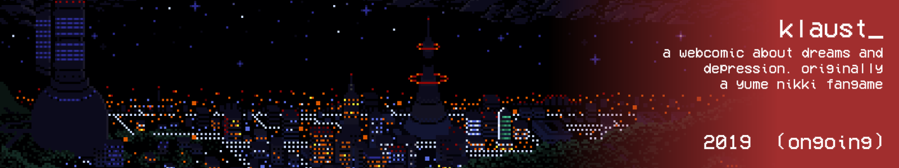

klaust_
klaust_ is one of my latest projects that i started working on as of this year. it's an rpg maker 2003 game and/or comic where you live far from an unnamed city in the middle of some forestation. your name is rikotsura, and you're a tired introvert. much like the original yume nikki game, you can freely explore your own dreams. the difference this time comes within a headset that warps reality, allowing you to further explore your dreams.
screenshots


concepts

i currently also have plans on making the game in comic form, originally because i thought it wouldn't have come into fruition originally, and i still wanted to work on it. as of now, both the game and the comic are being worked on, although i'm focusing more on the comic rather than the game, but focus can always be shifted.
the series mainly focuses on dreams and depression, as said in the title. i would like to show more details on it besides a few in-game screenshots, but i can't spoil any new stuff until public demos come out.
i've made a development discord server to keep game stuff such as build files and whatnot, but i'm not sharing any invite links as the server is for developers only. for any inquiries on wanting to do stuff for the game please contact me via discord (rust_#0051)